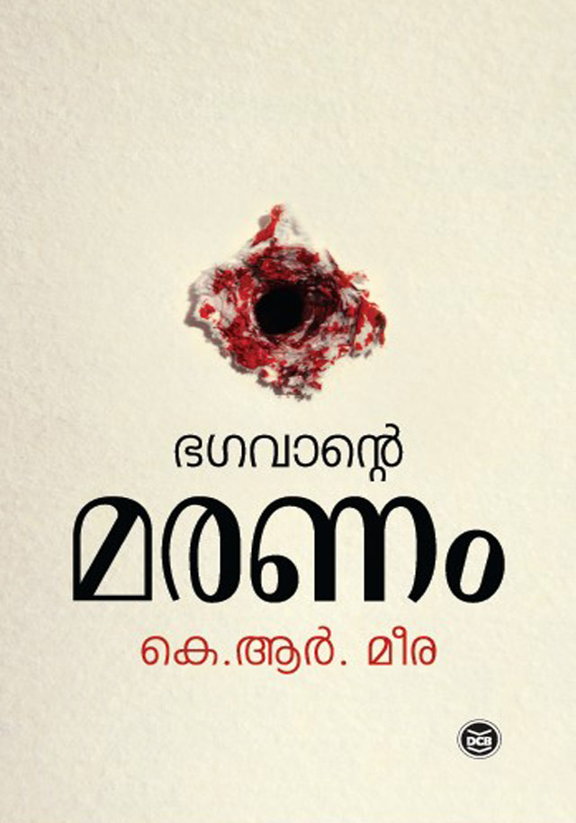

Author: കെ ആർ മീര
Review by: എ ആർ പ്രസാദ്
അപ്രതീക്ഷിതമായി ഇന്നലെ കെ.ആർ മീരയുടെ ഭഗവാൻ്റെ മരണം എന്ന ചെറുകഥാ സമാഹാരം വായിച്ചു. ആദ്യ കഥ വായിച്ചപ്പോൾ നല്ല ഒഴുക്ക്, ആകെ 6 കഥകളാതിൽ ഉള്ളത്. ഇന്നലെ രാത്രി അതിൽ 4 എണ്ണം വായിച്ചു. ഇന്നു വെളുപ്പിനെ ബാക്കി രണ്ടും വായിച്ചു. സംഘിയണ്ണൻ എന്ന കഥ നേരത്തെ വായിച്ചതായിരുന്നുവെങ്കിലും ഒന്നു കൂടി വായിച്ചു.
മീരയുടെ ആദ്യകാല കഥാസമാഹാരങ്ങളെല്ലാം വായിച്ചിരുന്നുവെങ്കിലും അടുത്ത കാലത്തായി മീരയെ വായിച്ചിരുന്നില്ല.
ഭഗവാൻ്റെ മരണത്തിലെ കഥകളെല്ലാം നല്ല ഒഴുക്കോടെ വായിക്കാൻ പറ്റി. സമകാലീന രാഷ്ട്രീയത്തെ ശക്തമായി ഉൾച്ചേർത്ത് എഴുതിയിരിക്കുന്ന കഥകളാണ് എല്ലാം. ഭഗവാൻ്റെ മരണം എന്ന കഥ സാംസ്കാരിക പ്രവർത്തനത്തിൻ്റെ പ്രാധാന്യത്തെ എടുത്തു കാണിക്കുന്നുണ്ട്. ആൺ പ്രേതം, സപ്തംബർ 30 എന്നീ കഥകൾ സ്ത്രീ പക്ഷ കഥകൾ എന്നു പറയാം. സംഘിയണ്ണൻ ആക്ഷേപഹാസ്യവും സമകാലിക പൊളിറ്റിക്സും ചേർന്ന കഥയാണ്. മാധ്യമ ധർമ്മനും ഏതാണ്ട് അങ്ങനെ തന്നെ. സ്വച്ഛഭാരതി, കപട ആത്മീയതയിൽ സാധാരണക്കാർ വീണുപോകുന്നതിനെക്കുറിച്ചും പറയുന്നു.
പ്രമേയത്തിൻ്റെ തിരഞ്ഞെടുപ്പ് കൊണ്ടു മാത്രമല്ല എഴുത്തിൻ്റെ ഭംഗി കൊണ്ടും കഥകൾ ഇഷ്ടപ്പെട്ടു. ഇഷ്ടപ്പെട്ടു എന്ന് പറഞ്ഞാൽ ന്തറിൽ 60 to 65 മാർക്ക് കൊടുക്കാം😀